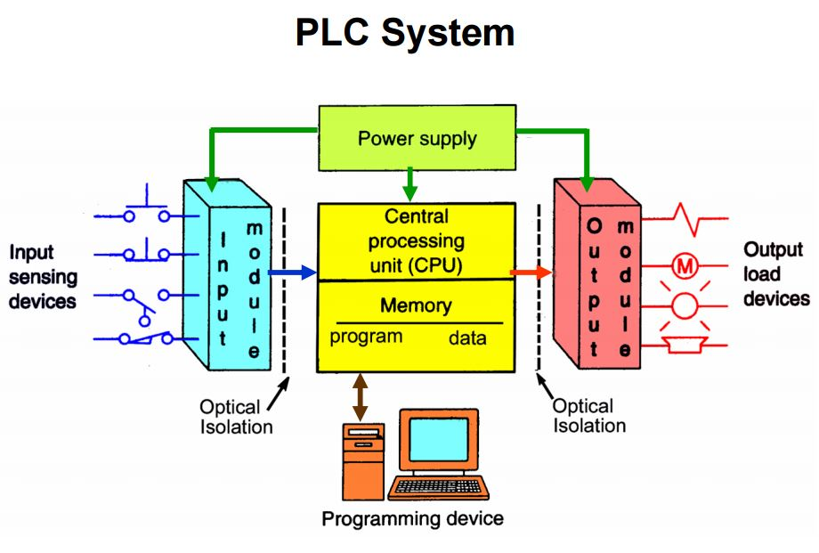

A PLC has many “input” terminals, through which it interprets “high” and “low” logical states from sensors and switches. It also has many output terminals, through which it outputs “high” and “low” signals to power lights, solenoids, contactors, small motors, and other devices lending themselves to on/off control.
In an effort to make PLCs easy to program, their programming language was designed to resemble ladder logic diagrams. Thus, an industrial electrician or electrical engineer accustomed to reading ladder logic schematics would feel comfortable programming a PLC to perform the same control functions.